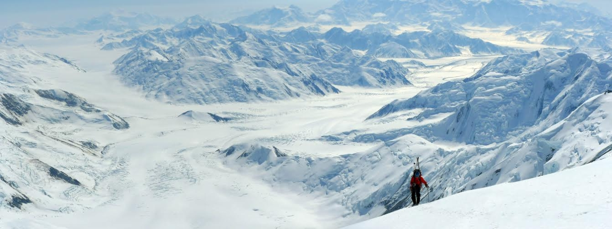
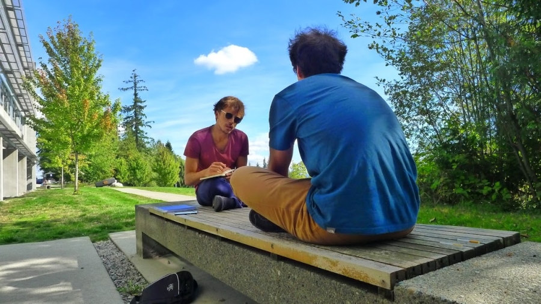
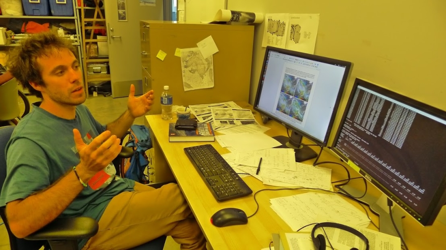
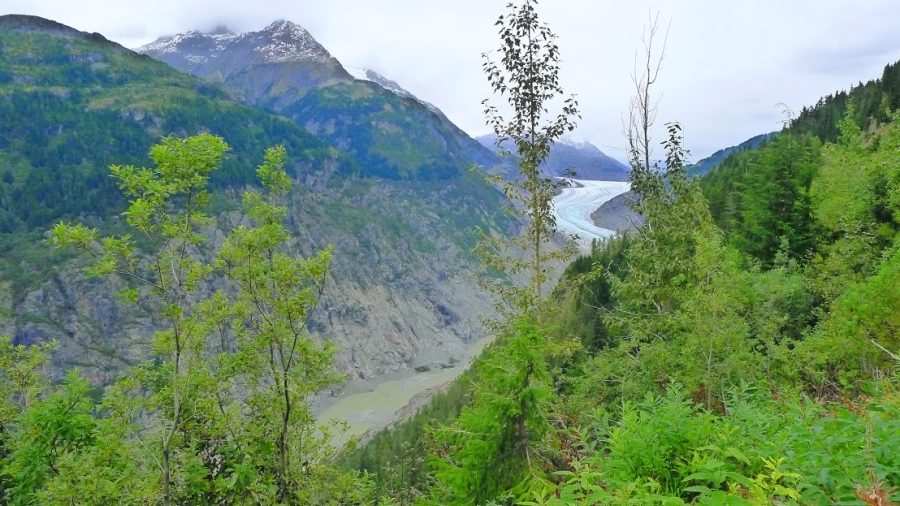
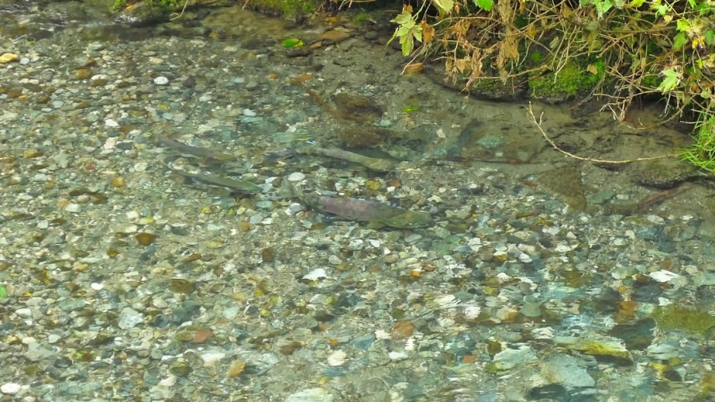
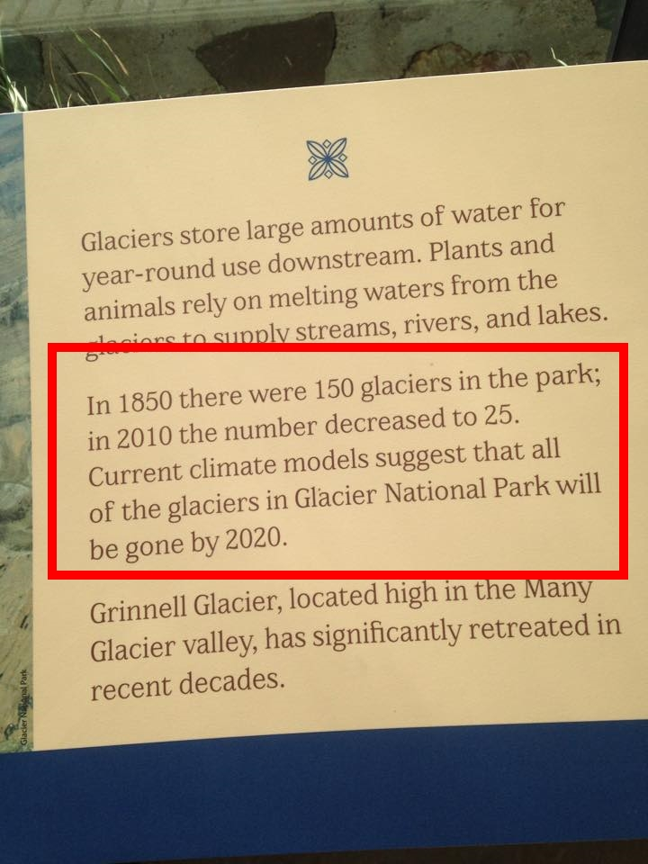
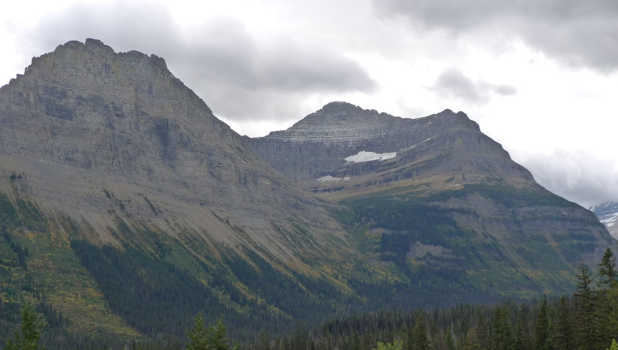

1/7 - Alaska & Canada : l'abondance de l'eau douce, le spectre de la fonte des glaces.
Bonjour à tous !
Pour notre premier article directement consacré à la présentation des problématiques de gestion de l’eau douce, nous avons choisi de vous parler des conséquences de la fonte des glaces dans des régions où l’eau douce ne vient presque jamais à manquer : l’Alaska et le Canada.
Situées au-dessus du cinquantième parallèle, ces régions de l’hémisphère Nord sont sujettes à des précipitations très variables (de 300 millimètres par an à presque 3000 en fonction des différentes zones alaskiennes) mais leur nature souvent neigeuse permet une immobilisation gratuite de la ressource. Les nombreux glaciers, les innombrables lacs (le Canada recense plus de 30 000 lacs de plus de 3km² sur son immense territoire, mais ne possède aucune estimation des millions de lacs de plus petite tailles) contribuent également avec force à cette présence permanente de la ressource. Le stress hydrique est une situation absente de ces territoires. Grégoire et moi avons dû rapidement réaliser que les préoccupations en matière d’eau potable y concernent bien plus les questions d’acheminement que de pénurie. Dans les endroits reculés, l’espacement des personnes empêche l’installation de réseaux de distribution et ce sont d’autres solutions qui sont mises en œuvres. A Fairbanks, une grande partie des habitants va chercher son eau potable au réservoir de la ville, comme on irait faire ses courses. Dans des endroits plus isolés encore, comme dans le chenil perdu dans les collines de Kamloops, au Canada, que Grégoire et moi avons eu la chance de visiter, c’est l’utilisation de pompes qui permet un apport abondant d’eau de source, potable et gratuite.

Un champ de glaciers du Yukon au Nord du Canada
Notre rencontre avec Adrien Gilbert, glaciologue à la Simon Fraser University (SFU) de Vancouver nous confirme cette situation d’abondance en eau douce que connait le Canada. Il nous explique que les courts épisodes de sécheresse que traverse Vancouver ne sont une menace ni pour l’agriculture, ni pour l’apport en eau, étant donné les réserves colossales du pays. En revanche, ceux-ci représentent un risque important pour les immenses forêts canadiennes. Quand l’été arrive, la mousse qui recouvre leurs sols sèche rapidement et si les pluies tardent, des feux sauvages surviennent et embrasent de gigantesques parcelles de forêt et avec eux la faune et la flore qui les peuplent. Les sécheresses passagères, comme celle qui affecte la région de Vancouver depuis plusieurs mois, laissent donc des marques visibles sur plusieurs années. Il est difficile de prévoir l’évolution de ces feux et de les combattre. Quand les territoires de forêts à risque représentent plusieurs fois la taille de la France, on doit réserver l’option « Canadair » - largage de quantités d’eau par avion sur les feux sauvages – aux zones habitées, et se contenter de laisser les feux suivre leur évolution naturelle le reste du temps. Le problème, c’est que les rapides variations climatiques et les sécheresses qui en découlent décuplent leur agressivité, et bouleversent l’équilibre de ces forêts.

Entretien avec Adrien Gilbert, glaciologue à la SFU
Sur les variations climatiques de notre siècle, Adrien est catégorique. L’argument des climato-sceptiques consistant à affirmer que les changements climatiques sont des variations naturelles ayant toujours existé dans l’histoire de la terre nie la réalité de décennies de travail scientifique. Les observations climatologiques relèvent une accélération sans précédent du réchauffement dans l’histoire de la planète. Adrien, qui étudie la fonte de la calotte de Barnes (un champ glaciaire situé sur l’île de Baffin, au Nord-est du Canada) est formel : depuis le XIXème siècle et la révolution industrielle, les élévations de température s’opèrent plus vite que jamais dans les derniers cycles naturels de réchauffement planétaire. L’influence humaine est indéniable.
Adrien étudie une calotte glacière composée de glaces vieilles de plus de quinze mille ans. Elle est une relique de la calotte polaire qui recouvrait alors la moitié du continent Nord-Américain, et a reculé depuis, l’Inlandsis Laurentidien. Adrien travaille avec une petite équipe spécialisée dans les glaciers Nord-Américains que Grégoire et moi avons eue la chance de voir de loin lors de notre traversée du Yukon. Ceux-ci sont tous en recul. Cependant, Adrien ne verse pas dans le catastrophisme. A court terme, dit-il, les vraies pertes pour le Canada et l’Alaska sont des pertes de paysage et, peut-être, des atteintes aux écosystèmes. Les prévisions à long-terme sont très difficiles à établir, continue-t-il, car les facteurs qui entrent en compte dans le climat global sont innombrables : courants marins, vents, précipitations de pluie et de neige… Une évolution peut en induire une autre, et Adrien ne veut pas extrapoler sans certitudes. A long terme, beaucoup de choses sont possibles. Sa seule certitude scientifique, c’est le recul phénoménal des glaciers Nord-Américains.

Adrien dans son laboratoire de glaciologie
Au cours de notre périple, Grégoire et moi avons pu observer les effets du réchauffement sur les champs de glace de l’ouest Canadien. Margaret, rencontrée à Anchorage, nous avait déjà parlé du recul considérable des glaciers de la péninsule de Katmai depuis son enfance. En nous rendant au Salmon glacier, niché sur la Stewart-Cassiar Highway, au fin fond de la Colombie Britannique, Greg et moi avons pu constater l’affaissement de ce champ de glace. Avant de pouvoir arriver à son pied, il nous a fallu près d’une heure de conduite le long d’une vallée que, pourtant, il remplissait il y a moins de deux siècles. Le torrent qui en découle est remonté chaque année par des milliers de saumons, qui cherchent à retrouver l’endroit où ils ont vu le jour afin d’y pondre à leur tour. L’odyssée de ces animaux est prodigieuse. Chaque saumon femelle pond près de 2500 œufs. Après leur fécondation, l’éclosion des alevins, leur descente du torrent jusqu’à la mer, leur croissance, leur vie puis la remontée risquée vers le lieu de naissance, seuls deux saumons sur ces 2500 œufs auront la possibilité de pondre et de féconder à leur tour. Leur remontée annuelle permet à des centaines de grizzlys et ours noirs de pêcher sur les rives et d’accumuler la graisse nécessaire à l’hibernation. Un grizzly adulte doit en effet ingurgiter près de 35 000 calories par jour une fois l’automne venu, si celui-ci veut passer l’hiver. Le long de la rivière où ceux-ci pêchent, Grégoire et moi voyons défiler les cadavres de saumons malchanceux. Pour retrouver leurs lieux de pontes, ceux-ci se repèrent grâce à un certain nombre de facteurs, dont la composition des eaux qu’ils remontent. Les micro-organismes et éléments qui s’y trouvent sont directement influencés par les glaciers qui alimentent le fleuve. Quelles pourraient être les conséquences de la fonte des glaces sur cette biosphère de la côte canadienne ?

Le pied du Salmon Glacier en Alaska qui recule chaque année

Quatre saumons en train de remonter le torrent
Le constat le plus ironique de la rapide fonte des glaces affectant le continent nous a été offert lors de la visite de Glacier National Park, situé à la frontière entre le Montana et les Etats-Unis. On pourrait se douter que la présence d’éventuels champs de glace justifierait le nom de ce parc et, pourtant, en le parcourant, seuls quelques névés et maigres taches blanches apparaissent sur les sommets. Le centre d’information du parc confirme notre impression : d’ici 2020, Glacier National Park aura vu tous ses glaciers disparaître.

Un panneau d'information au Glacier National Park

L'une des vues du Glacier National Park, où l'on voit bien le glacier réduit quasi à néant
Les conséquences de ces fontes accélérées sont encore assez vagues. Les prophéties de montée des eaux, de changement des courants marins sont souvent projetées sur des dizaines d’année et ces débats appartiennent aux scientifiques aguerris. Il nous semblait cependant intéressant de vous faire partager notre sentiment sur les certitudes à court terme concernant l’évolution des glaciers. Les bouleversements de la faune, si riche au canada, les dépérissements de paysages et de champs de glaces vieux de milliers d’années nous ont donné à réfléchir, et nous espérons avoir réussi à partager ce sentiment avec vous.
Merci pour votre lecture !
Antoine
En prime une vidéo synthétisant nos recherches sur ce premier chapitre de notre aventure :
Sous-titres disponibles